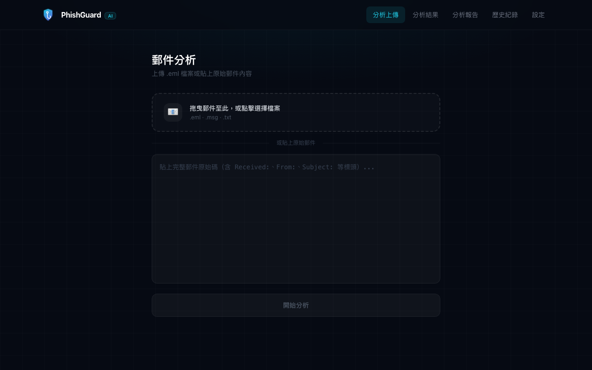
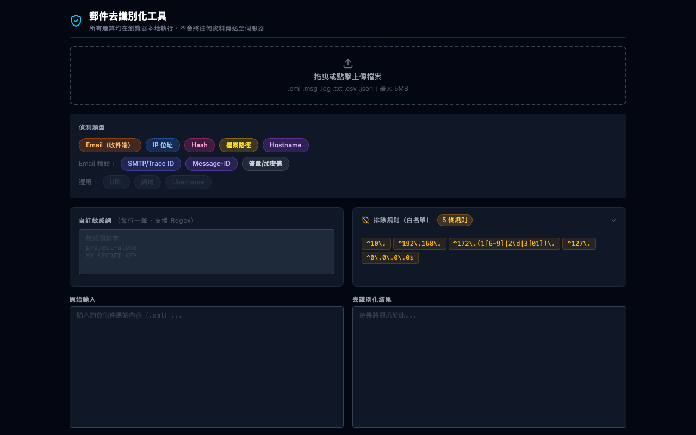
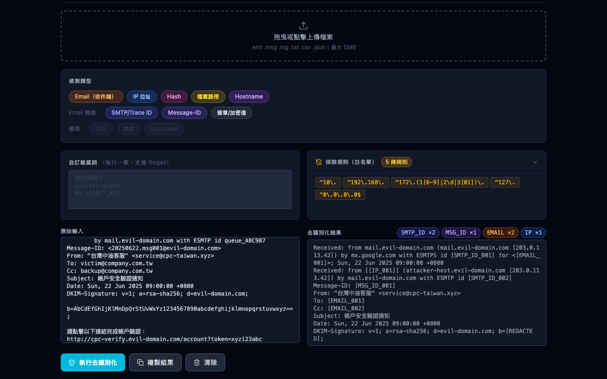

PhishGuard
釣魚郵件分析平台.
上傳 .eml 原始郵件，AI 自動完成研判、SMTP 路由追蹤、IOC 萃取與情資豐富化，最終輸出一份可直接呈報的繁體中文鑑識報告。附帶獨立開發的郵件去識別化工具，安全分享原始郵件時保護機敏資訊。
React + TypeScript
Express + Node.js
Kimi K2
VirusTotal API
URLScan.io
OpenCTI
jsQR + Jimp
mailparser
Cheerio
7
分析頁面
4
外部情資來源
12
DeID 去識別類型
00


系統畫面

01
分析流程
01
上傳郵件
拖放 .eml 檔案、貼上原始 MIME 文字，或從內建樣本（偽冒台灣品牌）直接載入。上傳後即時預覽 header 與內文，確認後再送出分析。
02
AI 研判
Kimi K2 依 SPF / DKIM / DMARC 驗證結果、網域一致性、社交工程語氣、連結可疑程度，輸出結構化 JSON：PHISHING / SUSPICIOUS / SAFE、信心分、風險分，以及具體的社交工程手法清單。
03
SMTP 路由重建
從 Received headers 由下往上解析完整傳遞鏈，標記可疑 hop，自動處理 IPv4-mapped IPv6 格式。
04
IOC 萃取與情資豐富化
自動提取 domain、IP、email、URL，並行查詢 VirusTotal、URLScan 沙箱、IP 地理定位、WHOIS。QR code 附件與 HTML table 拼出的 QR（常見規避技術）一併解碼。
05
報告輸出 + 情資推送
產生繁體中文鑑識報告，可選擇 email 寄出。惡意 IOC 同步推送至自架 OpenCTI 平台建立情資庫。
02
IOC 情資豐富化
分析結果頁面（IOC 頁）對每個指標呈現完整情資，IOC 類型：
DOMAIN
IP
EMAIL
URL
VirusTotal
惡意 / 可疑 / 無害廠商數，比例長條圖視覺化，直連報告頁。
URLScan.io
沙箱截圖、最終跳轉 URL、頁面分類，支援 submit 新 URL 並輪詢結果。
IP 地理定位
國家、組織、ASN、ISP，搭配國旗 emoji 顯示。
WHOIS
Registrar、註冊 / 到期日、Nameservers，快速辨識新登記可疑網域。
03
內建樣本郵件
收集偽冒台灣常見品牌與機關的真實釣魚郵件，讓使用者不需自備測試檔即可直接體驗完整分析流程。
台灣中油
偽冒帳單更新通知，含惡意連結
PHISHING
台北捷運
偽冒服務通知，要求帳號驗證
PHISHING
監理服務
偽冒通知信，附帶可疑 URL
PHISHING
CYBERSEC 2026
QR code 嵌入圖片型釣魚，測試 QR 解碼功能
SUSPICIOUS
Momo 購物
電子發票通知（合法來源，測試 SAFE 研判）
SAFE
04
Mail DeID Tool — 郵件去識別化工具
將原始郵件提交給外部工具或 AI 分析前，需先移除機敏資訊。這個獨立開發的純前端工具能自動辨識並以 token 取代所有可識別個人身份的資料。


12 種識別類型，全部可自訂
偵測範圍涵蓋郵件 header 與內文，以 [EMAIL_001] 格式取代，附帶對照表方便追溯。
EMAIL
IP
HASH
PATH
HOST
DOMAIN
URL
USER
SMTP_ID
MSG_ID
SIG
QUEUE_ID
RFC 2047 解碼
自動展開 Base64 / Quoted-Printable 編碼的 header 欄位再做去識別，不會漏掉中文編碼的寄件者名稱。
排除規則（Regex）
預設排除 RFC 1918 私有 IP，支援自訂 regex 清單，避免過度遮蔽已知安全的內部主機。
收件方全覆蓋
To / Cc / Bcc / Delivered-To / Received: for 全部遮蔽，支援多收件者格式。
純前端執行
資料不離開瀏覽器，支援 .eml .msg .log .txt .csv .json，單檔上限 5 MB。
← 返回作品集
Full-Stack
AI / LLM
React
Node.js